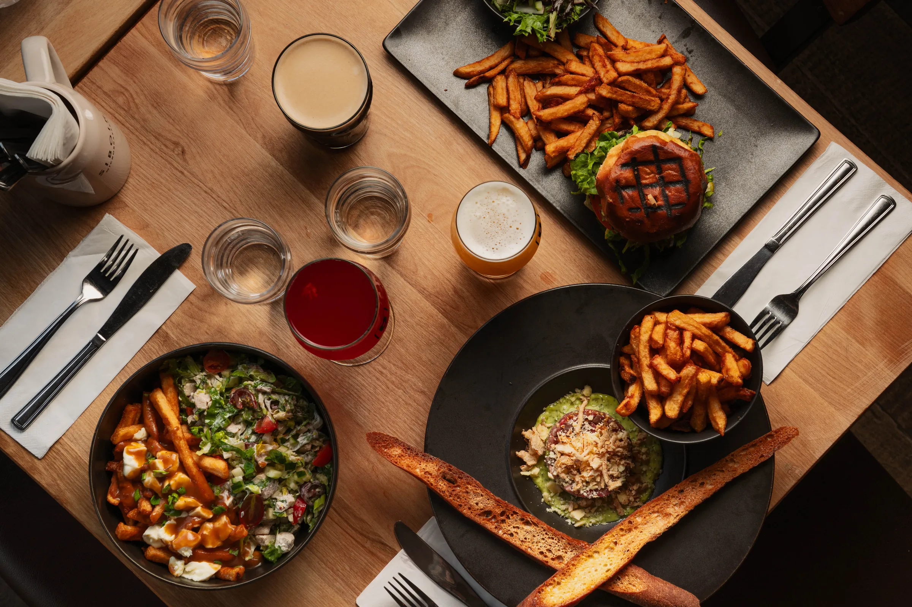
Microbrasserie
Une série photo pour la microbrasserie Siboire : les assiettes, les bières tirées au fût et le service, en photos et en vidéos courtes. Tout capté sur place, de la table jusqu'au comptoir.
Deux vidéos en format vertical, prêtes pour Instagram. Un clic sur la vidéo active le son.
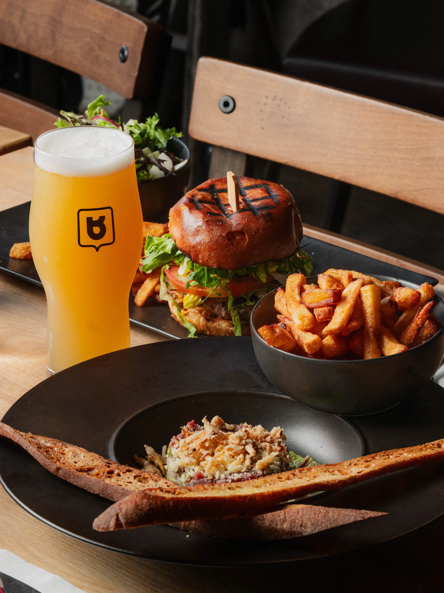
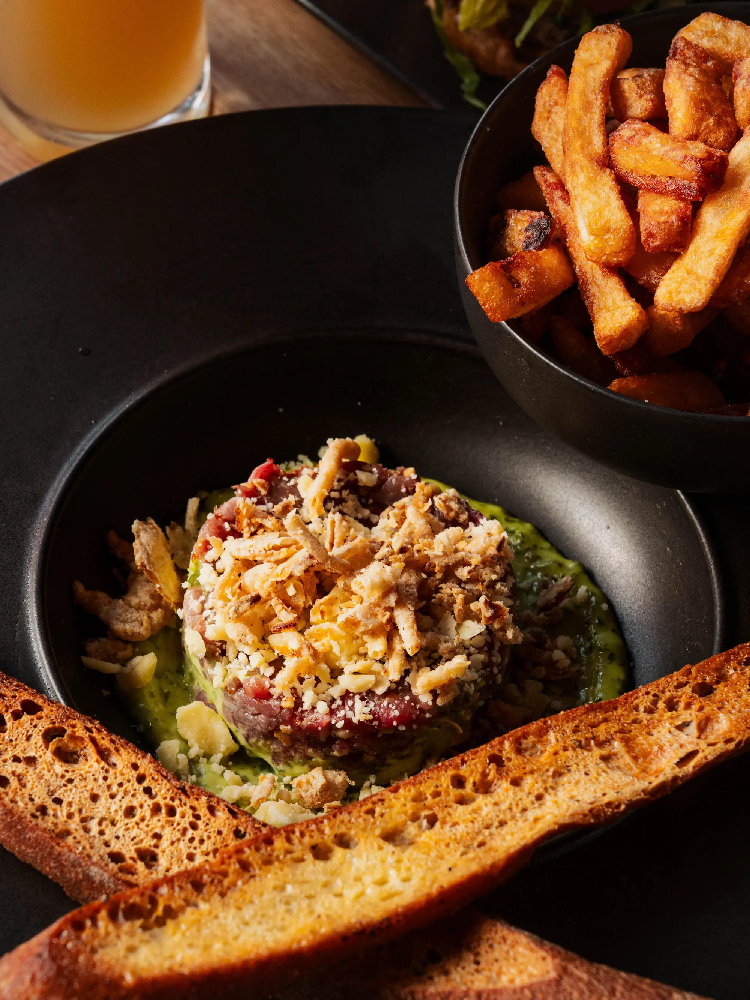
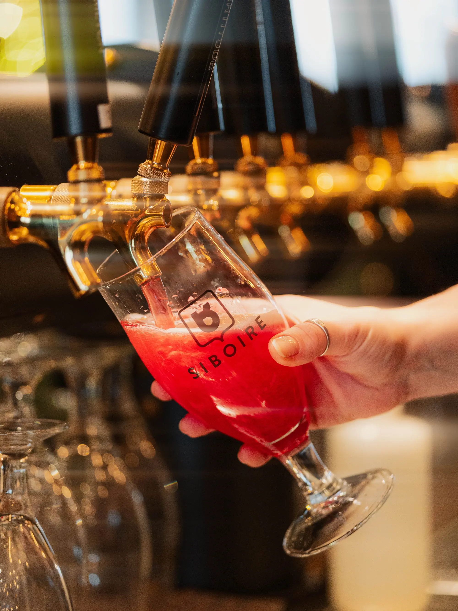
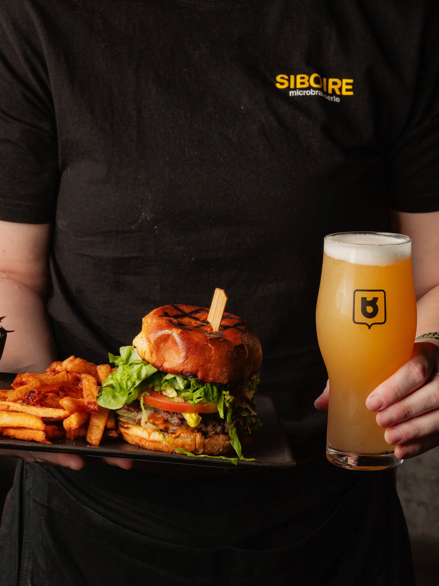
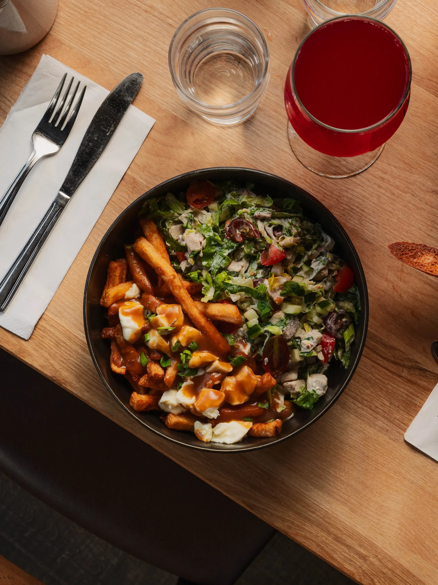
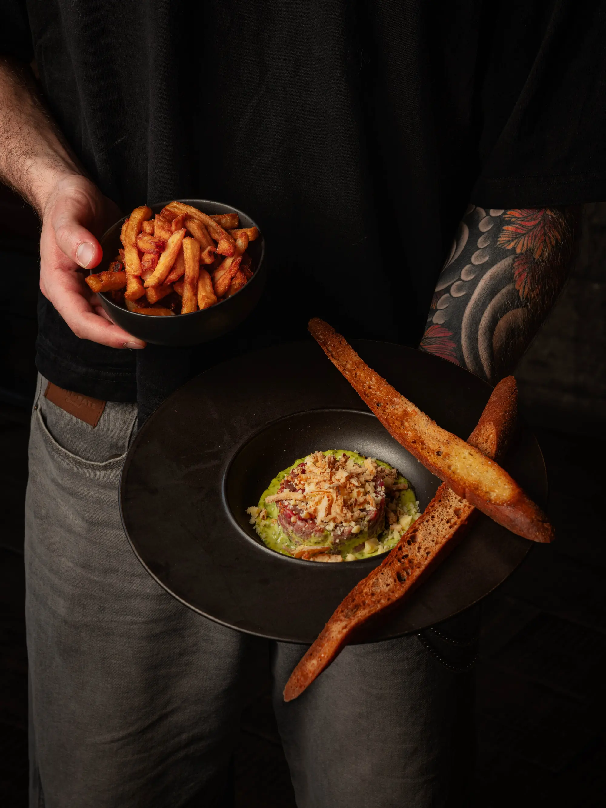
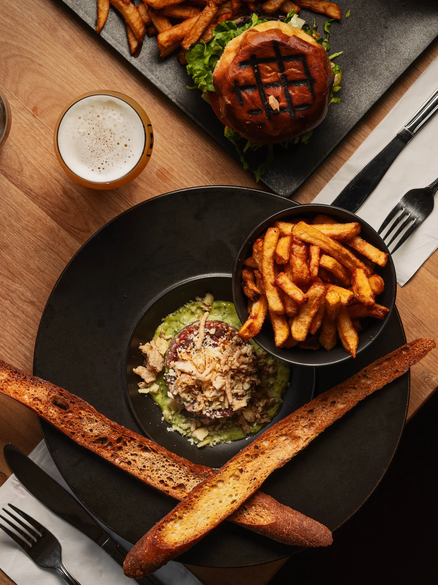
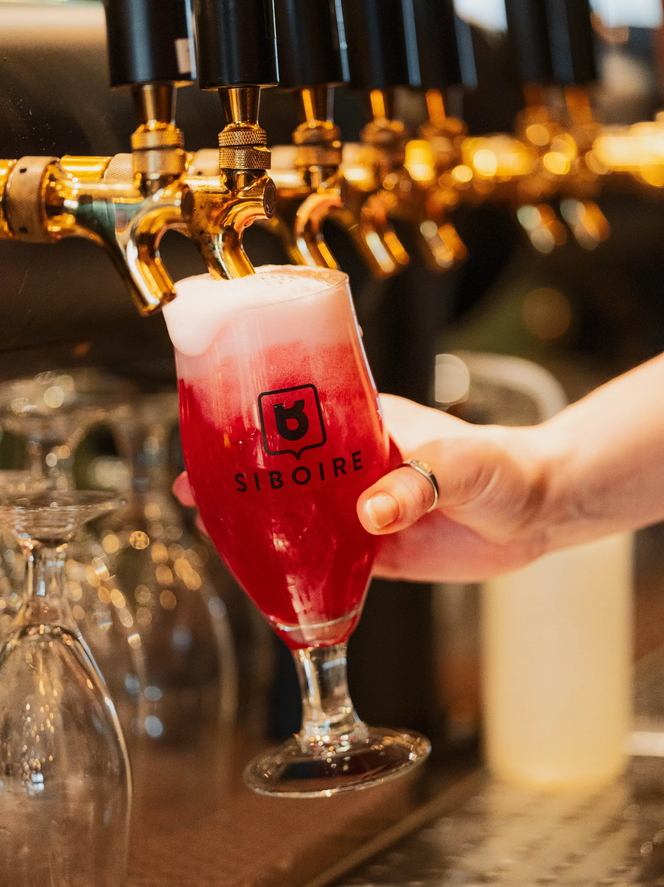
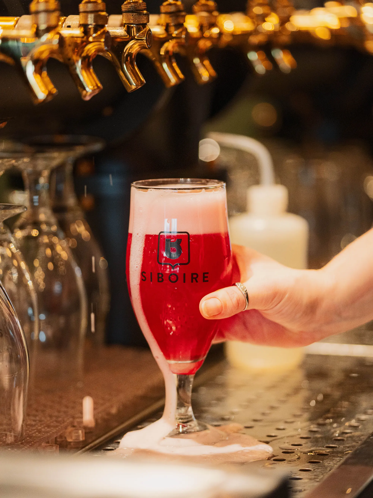
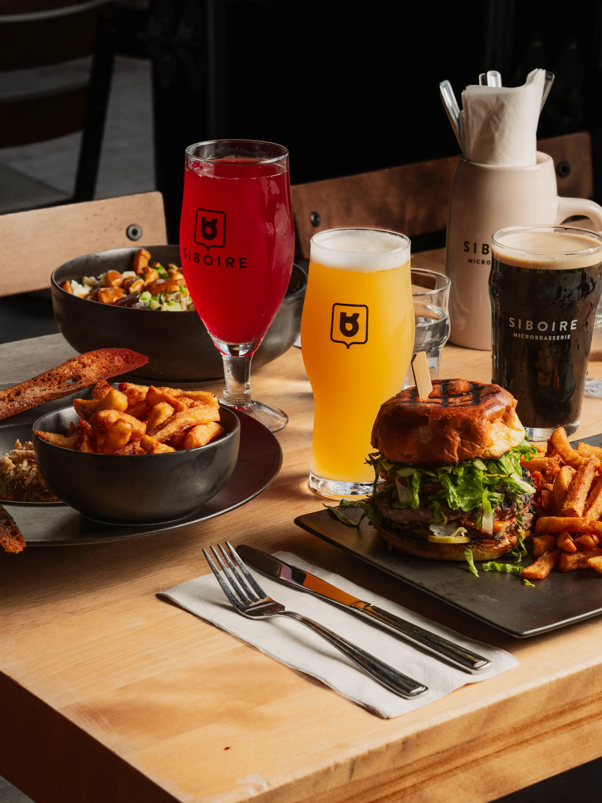
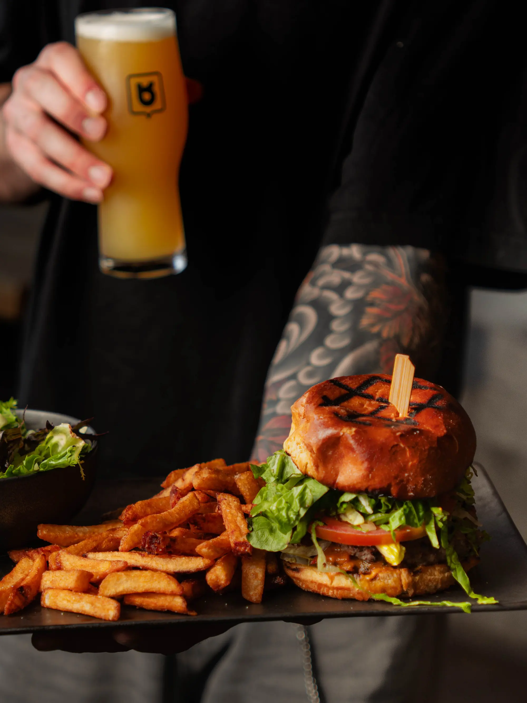
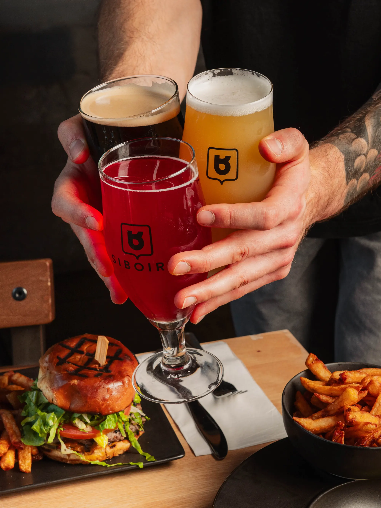